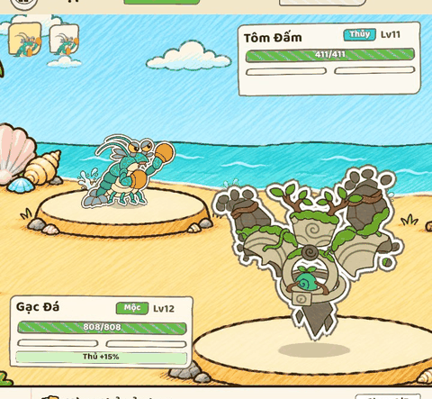
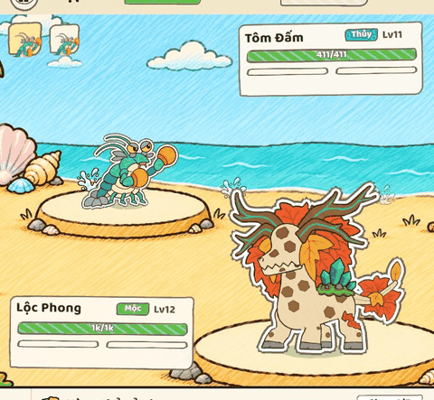
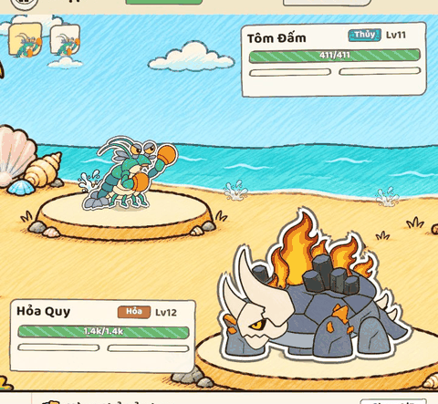
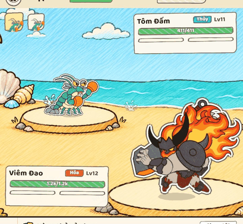
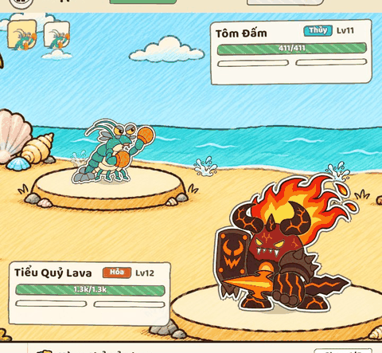
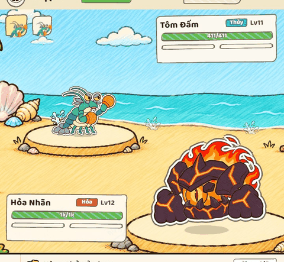

Dùng lại bộ chiêu nước ở hệ khác, chỉ chỗ hợp: cầu prefab gốc MagicWater_OrbLoop tô dải lục / đỏ cam (CauMaTheo), lưỡi chém nước đổi bảng lửa, tia Water Laser bảng lửa. Chụp tour Unity, ~0,1 s một khung. Mã: HatChieuDoiMau.cs, HatNuocChieu.cs (CauMaTheo), HatDa / HatLoc / HatRua / HatNhan.cs.

Gạc Đá (Mộc) · Chiêu cuối Cầu ma xanh lụctụ cầu trên hai tay (gió lá hút vào), cầu thành hình: lõi sáng, dải lục bay vòng; ném, nổ lá · 34 khung

Lộc Phong (Mộc) · Chiêu cuối Cầu ma xanh lụcngửa đầu há mồm tụ cầu to, thành hình rồi gật đầu nện vào đối thủ · 35 khung

Hỏa Quy (Hỏa) · Chiêu cuối Cầu ma màu lửalửa trên lưng hút vào cầu đỏ cam đặc trên mũi sừng (to 1,8 lần cầu cũ), lưỡi lửa liếm quanh; hất sừng phóng cầu, cầu vỡ (quầng cam, vòng sóng, lưỡi liềm lửa) rồi nổ lửa · 34 khung

Viêm Đao (Hỏa) · Chiêu cuối Chém lửalao tới liên hoàn 7 nhát: mỗi nhát một lưỡi liềm lửa (Chém nước đổi bảng lửa); cú bổ cuối cung chém dọc + nổ lớn · 36 khung

Tiểu Quỷ Lava (Hỏa) · Chiêu mana Tia lửa năng lượngchĩa giáo bắn tia lửa kiểu Water Laser từ mũi giáo (trước: cầu lửa, lệch clip) · 24 khung

Hỏa Nhãn (Hỏa) · Chiêu mana Tia lửa năng lượngtia lửa kiểu Water Laser từ giữa con mắt, bông trúng toé ở thân đối thủ · 25 khung